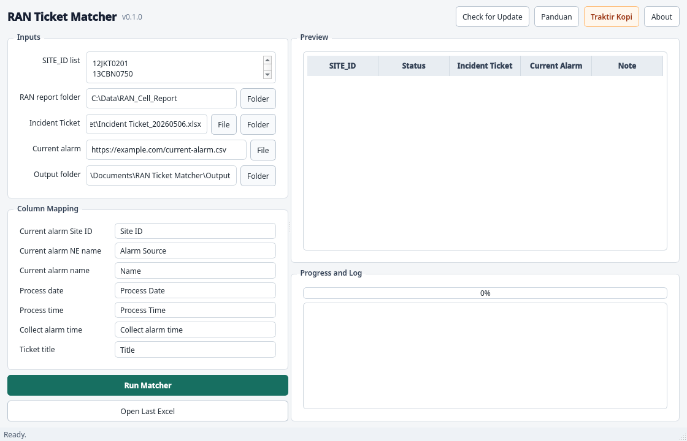

Dibuat untuk pengecekan Site ID yang lebih cepat.
Aplikasi ini membantu tim membaca hubungan antara RAN Cell Report, Incident Ticket, dan Current Alarm tanpa perlu menyusun lookup manual berulang di Excel.
Satu Site ID bisa punya lebih dari satu NE. Semua kandidat tetap disimpan agar ticket tidak salah dipasangkan.
Title incident dicocokkan ke NE, termasuk suffix pendek seperti NE_4G atau NE_A sebelum tanda titik dua.
Sumber current alarm bisa URL CSV atau file lokal, dengan mapping kolom yang bisa disesuaikan.
Alur kerja ringkas.
Pilih folder report, pilih file ticket, masukkan sumber current alarm, lalu jalankan matcher.
- Masukkan Site ID. Bisa satu per baris atau dipisah koma.
- Pilih data input. RAN report folder, Incident Ticket, Current Alarm, dan output folder.
- Review Excel hasil. Sheet output membantu melihat alarm yang sudah atau belum punya ticket.

Output yang langsung bisa dipakai.
Workbook hasil dibuat dengan sheet terpisah agar tim bisa membaca kandidat NE, ticket match, current alarm, dan status pengecekan.
- NE_CandidatesSite ID, RAT, NE Name
- OutputTicket yang match dengan NE
- Current AlarmAlarm aktif yang relevan
- Current Alarm Ticket CheckAlarm aktif ada ticket atau belum
Mulai dari release terbaru.
Download installer Windows dari halaman Releases, lalu buka panduan detail jika butuh contoh penggunaan dan cara membaca hasil Excel.